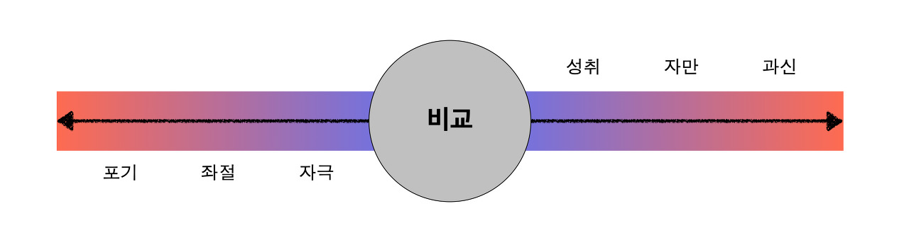

감정은 우연히 찾아온다
우연히 Github Repo에 들어가 봤습니다. 학창 시절, 멋모르고 마구잡이로 만들었던 저장소들이 마음에 들지 않았기 때문이에요. 그렇게 옛날 생각을 하며 정리를 하던 와중, 처음으로 개발자라고 내 입으로 말할 수 있게 해 준 부트캠프가 눈에 들어왔습니다. 그렇게 그 저장소들을 보며, 그때 마주했던 사람들을 떠올렸어요.
기억에 남는 사람들이 있었습니다. 누구보다 좋은 코드를 작성했었고, 아는 지식도 많았어요. 비전공자인 제게 그들은 부러움과 선망의 대상이었습니다. 제 삶의 방향을 찾는데 돌아 돌아왔기 때문에, 기반 지식도 없고 지인도 없었거든요. IT업계에서 생활하기에 꼭 필요한 기반 지식들과 지인들, 다양한 코딩 경험들을 갖고 있다는 것이 뒤쳐졌다 생각했던 제게는 큰 압박이었어요. 그렇게 할 수 있는 모든 것을 걸어 그들과 견주겠다는 다짐을 한 지 6개월. 운이 좋게 취업을 할 수 있게 되었습니다.
급하게 먹은 음식은 체한다고 했었나요. 아무래도 허겁지겁 배우긴 했나 봅니다. 입문 교육을 받을 시기, 이전에 배웠던 것들이 머릿속에서 많이 사라지고 있었어요. 다시 내면 속의 두려움이 커져가는 것이 느껴졌고, 이 마음을 이용하기로 결심했습니다. 이왕 이렇게 된 것 정확하고, 쉽게 내 말로 다시 정리하자. 그렇게 3개월 동안 다시 블로그를 만들어 정리했습니다.
그런 와중 제게 선망의 대상이던 사람들의 코드를 다시 읽게 되었어요. 3~4개월 전의 코드인데도, 정갈한 느낌이 있었습니다. 여전히 나는 그 사람들의 뒤에 있다는 생각이 들었고, 마음에는 공허함이 찾아왔습니다. 노력이라는 것이 소용이 없는 것인가 하는 생각입니다.
허탈함
이런 감정이 들 때가 항상 있었습니다. 대학 입학을 위해 원서를 넣을 때가 그랬고, 취업 준비를 할 때 그랬습니다. 그리고 그 주변에는 나보다 상대적으로 위치가 높은 사람들이 주위에 있었죠. 함께 달리고 있지 않는 상황, 소속감이 결여된 감정은 그 무엇보다 나를 약하게 합니다.
같은 출발선이라 생각했던 사람들이 어느새 내 앞을 달리고 있을 때, 우리 마음에 “질투”라는 단어는 자연스레 떠오릅니다. “나도 저런 곳에 가고 싶다. 나도 인정받고 싶다.” “사촌이 땅을 사면 배가 아프다.”라는 말이 시대가 변함에도 우리의 공감을 얻고 있는 것을 보면, 우리의 본성은 역시나 이기적인 듯합니다.
다음으로는 “보상”을 바라는 심리가 마음속에서 자라납니다. “나도 열심히 했는데, 나에게는 왜 보상이 오지 않는 걸까?, 불공평해.” 이 감정은 얼마나 많은 희생을 했는지에 따라 더 강하게 작용합니다. 희생의 강도야 상대적이겠지만, 개인마다 다른 이 희생의 비율은 “보상”을 바라는 심리가 커지는 데 큰 영향을 끼칩니다.
마지막으로는 “자책”입니다. “보상 심리”와 이 “자책하는 마음”은 Trade-Off 관계에 있습니다. “내가 이렇게 열심히 했는데, 왜 나는 이 정도야?” vs. “네가 열심히 하지 않아서 그런 거잖아.”의 두 마음이 싸우고 있습니다. 극단으로 치닫는 것이 좋지 않다는 것을 우리 몸은 본능적으로 아는 것인지도 모르겠네요.
중재자
내 마음에 어떠한 이유로든 전쟁이 난 상태라면, 이를 중재해줄 필요가 있습니다. “이성”의 개입을 통해 우리는 “사실 확인” 과정을 거쳐야 합니다. 가장 처음으로 이 감정들을 만들어 낸, “질투”에서 출발합니다. “너는 정말 질투할 상황이 맞는 거야?” 이 질문을 던지는 순간, 이성이 개입합니다.
먼저, 자신이 정말로 많은 시간을 쏟았는지 확인해보아야 합니다. 저 같은 경우, 비전공자로서 근본적으로 쏟은 시간 자체가 다릅니다. 약 3년의 시간이 차이가 나는 상황에서, 단순히 최근 “열심히”했다는 말은 문제를 피상적으로 볼뿐입니다. 그렇기 때문에 많은 시간을 쏟았다는 것은 옳지 못한 생각입니다. 하지만 현재 기준으로 보았을 때 절대적으로 많은 시간을 쏟았다면, 그 부분 역시 인정해야 합니다. 즉, 쏟은 시간의 총량은 부족할 수 있으나, 단기적 관점에 보았을 때는 많은 노력을 했다고 볼 수 있겠죠.
두 번째로는, 순간적으로 그 사람들에 대해 감정적으로(난 부족하다, 저 사람은 나보다 무조건 잘한다) 판단했기 때문에 결과가 더 높은 것처럼 판단되는 것은 아닌지에 대한 검증이 필요합니다. 모든 결과물을 세세하게 판단하기는 어렵기 때문에 얕게 보고, 부풀려서 생각하는 것은 아닌지 경계해야 합니다.
세 번째로는, 개인의 능력이 정말 떨어지는 것인지 확인해보아야 합니다. 즉, “벽”이라고 느껴지는지 따져보아야 합니다. 이 사람의 태생적 능력 자체가 뛰어나고, 거기에 이를 즐기며 임하는 사람이라면 “질투”를 느끼는 것이 사치일 수 있습니다.
비교라는 행위와 감정
“질투”라는 감정에 대해 많은 고찰을 했다면 이제 판단의 시간입니다.
가장 먼저 든 생각은, “내가 그 정보를 보지 않았다면 이런 생각을 했을까?”입니다. 혹은 좋지 못한 결과물을 보았다면 어땠을까요? 나태해졌을까요? 지금 이런 감정이 드는 것 자체가 좋지 않다고 생각했습니다. 내 감정, 혹은 행동을 견인하는 것이 외부 정보에 의존하고 있음을 느꼈습니다.
하지만 인간인 이상, 우리는 “비교”에서 벗어날 수 없습니다. 무리 지어 생활하는 우리는 항상 다른 사람의 감정, 행동, 판단, 언어, 표정 등을 관찰하고, 이에 맞춘 답을 내놓고 있기 때문이죠. 그렇다면, 정말 비교는 나쁜 것만을 담고 있는 걸까요?
“의미”를 내포하고 있는 어떤 단어든 장점과 단점을 가지고 있다고 생각합니다. “귀엽다”라는 단어도 긍정적인 의미만 내포하는 것처럼 보이지만, “결단력 있다”라는 단어를 내포하기는 어려운 것처럼 말이죠. 마찬가지로 “비교” 역시 장단점을 가지고 있다 생각합니다.
우리는 “비교”를 통해 자신의 위치를 확인합니다. 별도 없고 행성도 없는 우주 속에 물체가 있습니다. 그 물체는 자기가 속도를 가지고 있다는 것을 자각할 수 있을까요? 불가능합니다. 내가 어느 곳에 있는지 “비교”해줄 다른 물체가 없기 때문이죠. 개인의 성장에 있어서도 마찬가지입니다. 목표하는 리더, 라이벌, 나를 따르는 후배가 없다면, 우리는 본인의 위치를 알기 어려울 것입니다.

자신의 위치를 알게 됨으로써, 우리는 “성취”한다는 감정과 “자극”이라는 감정을 얻습니다. 그 강도가 지나치게 된 경우 “좌절”과 “포기”라는 감정 역시 얻을 수 있죠. 그리고 그 감정의 변경은 우리의 마음가짐에 달렸습니다.
나에게 떳떳하게
그렇다면 우리는 무엇에 집중해야 할까요? 비교라는 단어 자체가 장단점 모두를 가지고 있다면, 결국 이 상황을 어떻게 받아들이겠냐에 대한 답을 내야 합니다. 외부의 요소는 상수입니다. 누군가는 결과를 얻을 것이고, 어떠한 방식으로든 나에게 들려옵니다. 어떻게 대처해야 할까요?
이를 위해서는 내가 할 수 있는 최대한을 했는지 여부가 가장 중요합니다. 진정으로 할 수 있는 모든 것을 도전한 후에, 그래도 이루지 못한다면 그건 더 이상 “질투”가 되지 않겠죠. 그때부터는 “아쉬움”으로 변화할 것입니다. 오늘 내가 얼마나 이뤄냈느냐. 그래서 얼마나 다가갔느냐를 가지고 나의 상태를 비교하는 것이 중요합니다. 더 이상 외부 요소에 의한 것이 아닌, 나의 성장 정도를 가지고 비교를 행하는 것이 가장 건설적인 비교의 방법입니다.
인생은 불공평합니다. 같은 출발선에서 시작하지 못한다는 것이 누군가에게는 정말 큰 불행일 것이라 생각합니다. 그 에너지는 그 무엇보다 클 것입니다. 하지만, 그 거대한 동기를 외부로 돌리기보다 내면으로 돌릴 때, 우리는 다른 사람들에게는 없는 “무기”를 가지게 됩니다. 한 발짝 떨어져서 보면, 그 “부족함”이라는 감정이 한 번 더 나를 움직이게 만드는 하나의 “경쟁력”이 될 수도 있습니다.
결국 나에 대한 믿음이라 생각합니다. 현 상황에서 그들과의 격차를 받아들이고, 이제부터는 어떻게 하겠느냐. 어떠한 목표를 세우고, 계획을 세워 이뤄내겠느냐. 이러한 질문과 행동만이 내가 느낀 감정의 방향을 돌릴 수 있습니다. 그 방향과 계획이 올바르다면, 언젠가는 바라 왔던 이상을 이룰 것이고, 운이 좋다면 넘을 수도 있습니다. 그 과정에서 느끼는 감정 역시, 나의 원동력으로 잘 사용할 수 있다면 더더욱 좋겠지요.
그래서 오늘은 이런 감정을 즐겨보려 합니다. 즐거운 마음으로 내 동료의 성장을 축하하고, 언젠가 돌아올 내 성장을 보면서 저 역시 축하받을 것을 기대합니다. 덕분에 내 위치를 재고할 수 있었음에 감사합니다. 그리고 내일도 성장할 나의 모습을 기대해봅니다.